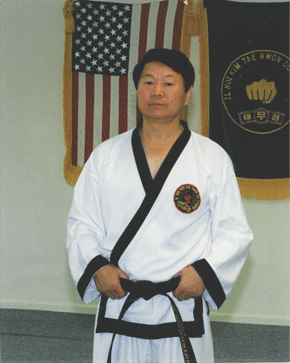

About The Grandmaster Instructor
Grand Master Il Hoi Kim began his study of Tae Kwon Do in Seoul, Korea
at the age of thirteen. He attained the rank of Black Belt at
fifteen, and then began his serious preparation for a lifelong
desire to learn and teach others about this unique art.
Grand Master Kim currently holds the rank of Eighth Degree Black Belt.
He also has a Bachelor's Degree in Economics.
Grand Master Kim has received many awards and recognitions through out his life and was also given a section at the Pennsylvania State Museasm's Icons Exhibit. He also has been teaching Tae Kwon Do for many years including instructing in the Korean Army and coaching the US National Team for the first World Tae Kwon Do Championship. He was also named Martial Artist of the Year in 1989.
Some Of Grand Master Kim's Achievements:
-Degree Black Belt, 1956
-Region Champion (Bang Ku Dae Ryun), Seoul, Korea in 1958
-Member of Tae Kwon Do demonstration team in 1962
-Instructed Junior Class in Headquarters, Moo Duk Kwan, 1965
-Korean Army Instructor, 1966-67
-Headquarters of Korean Military Advisory Group, Instructed 1967
-Instructed in Headquarters, Tae Kwon Do Moo Duk Kwan, 1968-71
-Technical Advisor in Seoul, Moo Duk Kwan, 1971
-Instructed in Washington, D. C., 1971-1973
-Coach of the U.S. National Team for the first World Tae Kwon Do Championship in Seoul, May, 1973
-Tae Kwon Do Instructor for the Lower Dauphin High School in 1976
-Assistant Director of the third World Tae Kwon Do Championship in Chicago, September 1977
-Champion in numerous tournaments in his early years
-Appreciation Award, from Pennsylvania Governor, 1983
-Letter of Citation, World Tae Kwon Do Federation, 1987
-Named Martial Artist of the Year, 1989
-Appreciation Award, from Pennsylvania Senator, 1989
-Letter of Citation, World Tae Kwon Do Federation, 1995
-Citation, from Pennsylvania Governor, 2004
-Citation, from Pennsylvania House of Representatives, 2004
-Certification of Commendation, from Pennsylvania Senator, 2004
-Letter of Congratulation, from Pennsylvania State Police Commissioner, 2004
-Proclamation, Dauphin County Commissioners, honoring Kim Studio's Celebration of 33 years of continuous Martial Art instruction, 2007
-Letter of Commendation, World Tae Kwon Do Federation, April 2008
-Received numerous citations and letters of appreciation from the World Tae Kwon Do Federation and Headquarters of Moo Duk Kwan
-Letter of Appointment, International Advisory Committee from World Tae Kwon Do Headquarters Sept. 2008
-Letter of Commendation from the President of the Kukkiwon, World Tae Kwon Do Federation - 2/03/14
-Certificate of Special Recognition from United States Senator Patrick Toomey - 2/21/14
-Letter of Recognition from Pennsylvania Governor Tom Corbett - 2/21/14
-Letter of Recognition from United States Senator Robert P. Casey Jr. - 2/21/14
-Citation of Recognition from The House of Representatives of Pennsylvania, Ronald S. Marsico and Speaker of the House Samuel H. Smith. - 2/21/14
-The State of Pennsylvania recognized the contributions of Grand Master Kim to our communities by including him in the State Museum's Pennsylvania Icon's exhibit.
-Letter of Appreciation from Oh Hyun-Deuk, President of the Kukkiwon - 9/04/17
-Letter for Kim Studio's 45th anniversary from Dauphin County District Attorney Francis T. Chardo - 1/9/19
-Letter for Kim Studio's 45th anniversary from Pennsylvania Governor Tom Wolf - February 2019
-Certificate for Kim Studio's 45th anniversary from United States Senator Patrick Toomey - 2/4/19
-Instructed at Kim Studio of Tae Kwon Do from February 1974 to the present.